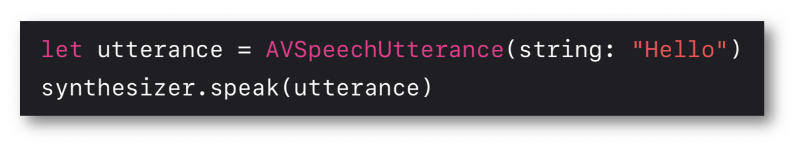
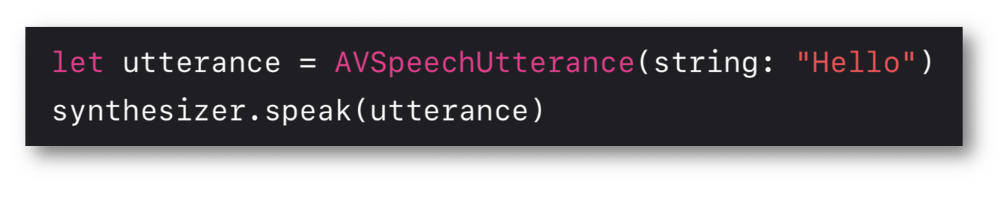

WWDC 2018 : Making iOS talk with AVSpeechSynthesizer
This video available on the official Apple website (session 236) aims at highlighting the essential elements to be implemented in order to use a synthesized speech thanks to AVSpeechSynthesizer.
 Various contents and their video timelapse are indicated hereunder:
Various contents and their video timelapse are indicated hereunder:
- Uses (00:48)
- Basics (02:03)
- AVSpeechSynthesizerDelegate (03:20)
- Demo (04:11)
- Choosing the right voice (04:31)
- Speech rate (05:32)
- Pitch and volume (06:15)
- Phonetics (06:54)
Thereafter, the selection of a title will give rise to the video playback on the Apple website directly at the proper moment.
Uses (00:48)
The wide range of possible use cases offered by this feature are introduced in this section.
Basics (02:03)
Using a synthesized speech first implies a AVSpeechSynthesizer instance creation that must be retained until the speech is done.
 Then create an utterance that must be provided to the previous instance.

In this case, an audio session is automatically activated and may be used together with the speech synthesis.
This session must be explicitly deactivated after speech is done.
Then create an utterance that must be provided to the previous instance.

In this case, an audio session is automatically activated and may be used together with the speech synthesis.
This session must be explicitly deactivated after speech is done.
AVSpeechSynthesizerDelegate (03:20)
This protocol encompasses many optional methods that handle speech synthesis events :
Demo (04:11)
Simple example of a speech synthesis highlighted thanks to the AVSpeechSynthesizerDelegate protocol methods.

Choosing the right voice (04:31)
The default voice is the built-in voice of the device supported language.
 However, it's still possible to select another voice specifying the desired language or using an identifier inside an array of speech voices that have been downloaded.
However, it's still possible to select another voice specifying the desired language or using an identifier inside an array of speech voices that have been downloaded.

Speech rate (05:32)
The speech rate can be changed thanks to the rate property going from 0 to 1.

Pitch and volume (06:15)
The pitch tone and the speech volume can be easily modified without affecting the system volume.

Phonetics (06:54)
The IPA can be used with Attributed Strings in order to customize how specialized names, words or sentences are pronounced.
 Attributed strings may also be used to specify a different language for a part of a sentence for instance.
Attributed strings may also be used to specify a different language for a part of a sentence for instance.